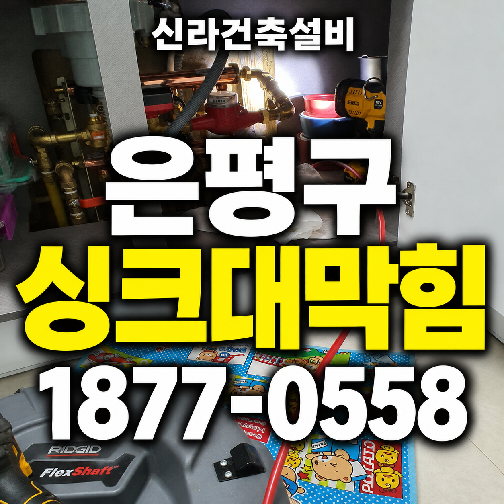

은평구 싱크대막힘·하수구막힘, 싱크볼에 물을 받아 통수 확인한 사례
많은 물을 한꺼번에 내려보내 확인한 이유는 무엇일까요? 기름이 찬 주름관을 새 배관으로 교체하고 하부 배관은 석션·샤프트 반복 작업으로 정리했습니다. 싱크대막힘 작업 후 싱크볼에 받은 물을 한꺼번에 배수하며 정상 통수를 확인했습니다.
서울 · 은평구 · 싱크대막힘
은평구에서 실제로 해결한 싱크대막힘 사례를 바탕으로 싱크대뚫는업체를 찾을 때 확인할 증상과 작업 방법을 정리했습니다. 물이 천천히 빠지는 증상, 싱크대 물이 안 내려가는 증상, 싱크대 역류, 악취와 반복 막힘 등은 원인이 서로 다를 수 있어 현장 진단 후 필요한 범위를 안내합니다.
물이 천천히 빠지는 증상, 싱크대 물이 안 내려가는 증상, 싱크대 역류, 악취와 반복 막힘처럼 비슷해 보이는 증상도 원인 구간은 다를 수 있습니다. 신라건축설비는 실제 출동 기록을 기준으로 증상·원인·사용 장비·작업 결과를 공개합니다.
주요 점검·작업: 석션·샤프트·배관내시경 점검과 배관 스케일링
싱크대막힘·싱크대뚫는업체 전체 서비스와 지역별 사례 보기 →많은 물을 한꺼번에 내려보내 확인한 이유는 무엇일까요? 기름이 찬 주름관을 새 배관으로 교체하고 하부 배관은 석션·샤프트 반복 작업으로 정리했습니다. 싱크대막힘 작업 후 싱크볼에 받은 물을 한꺼번에 배수하며 정상 통수를 확인했습니다.
교체할 구간과 장비로 청소할 구간은 어떻게 나누었을까요? 기름이 찬 주름관을 새 배관으로 교체하고 하부 배관은 석션·샤프트 반복 작업으로 정리했습니다. 싱크대막힘 작업 후 싱크볼에 받은 물을 한꺼번에 배수하며 정상 통수를 확인했습니다.
싱크대 뚫는 업체는 기름이 많은 배관을 어떻게 작업할까요? 기름이 찬 주름관을 새 배관으로 교체하고 하부 배관은 석션·샤프트 반복 작업으로 정리했습니다. 싱크대막힘 작업 후 싱크볼에 받은 물을 한꺼번에 배수하며 정상 통수를 확인했습니다.
싱크대가 막혔을 때 주름관을 교체한 뒤 왜 청소를 이어갔을까요? 기름이 찬 주름관을 새 배관으로 교체하고 하부 배관은 석션·샤프트 반복 작업으로 정리했습니다. 싱크대막힘 작업 후 싱크볼에 받은 물을 한꺼번에 배수하며 정상 통수를 확인했습니다.

물이 잘 내려가지 않을 때 연결 호스만 확인하면 충분할까요? 기름이 찬 주름관을 새 배관으로 교체하고 하부 배관은 석션·샤프트 반복 작업으로 정리했습니다. 싱크대막힘 작업 후 싱크볼에 받은 물을 한꺼번에 배수하며 정상 통수를 확인했습니다.